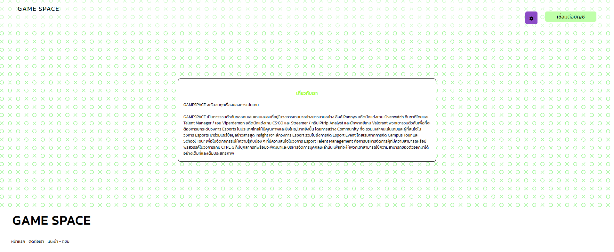

ระยะเวลาการทำงาน
16กุมภาพันธ์ 2567-31 มีนาคม 2567
สิ่งที่จะพัฒนา
ชื่อแอป : Game space
แอปสำหรับหาเพื่อนเล่นเกมออนไลน์
Let's play together
เครื่องมือ
Figma
HTML
Css
Java Script
Design Process

Problem / Pain Point
เวลาว่างไม่ตรงกันเพื่อนสนิท
อยากรู้จักเพื่อนใหม่ๆ
User Interviews
สัมภาษณ์ผู้ใช้เพื่อให้ทราบถึงปัญหาจริงของแต่ละคน เพื่อนำมาวิเคราะห์และปรับกลยุทธ์ในการออกแบบแอปให้ตอบโจทย์ความต้องการของผู้ใช้ให้มากที่สุด
โดยมีการเตรียมคำถามเป็นข้อ ๆ เพื่อพูดคุยกับผู้ใช้ และมีคำถามที่ได้เตรียมไว้เพื่อถามในจุดสำคัญหรือจุดที่ต้องการเน้นย้ำเฉพาะ
ตัวอย่างคำถามที่ใช้ในการพูดคุยและสัมภาษณ์
- ถ้าจะหาเพื่อนเล่นเกมด้วยหาช่วงเวลาไหนได้บ้าง
- เวลาช่วงไหนบ้างที่คนจะเยอะเป็นพิเศษ
- ถ้าเจอคน Toxic จะทำยังไง
สรุปคำตอบที่เป็นข้อมูลสำคัญ
ทางแอปเราสามารถหาเพื่อนได้ 24 ชั่วโมงตลอดทั้งวัน
สามารถแจ้งชื่อบุคคลดังกล่าวทางแอดมินแอปเราได้ตลอด 24 ชั่วโมง ทางแอปจะทำการแบนทันที
ช่วงเวลาหลังจาก 16.00 น. เป็นช่วงที่ทุกคนเสร็จภารกิจของตนเอง จนถึง 00.00 น. เป็นต้นไป ( อาจมีบางกลุ่มที่นอกเหนือจากเวลาดังกล่าว )

Persona
Age: 20
Gender: ชาย
Work: นักเรียน-นักศึกษา
Family: โสด
Location: นครปฐม, ไทย
Characters
เอ็มเป็นนักศึกษาที่มหาวิทยาลัยแห่งหนึ่งในจังหวัดนครปฐม เนื่องจากเอ็มกับเพื่อนสนิท
( ชื่อ หลิว ) เวลาว่างเล่นเกมส์ไม่ตรงกัน เพราะเอ็มเป็นคนที่นอนดึกตื่นสาย ส่วนหลิว
ตื่นเช้าเข้านอนเร็ว มากกว่าเอ็ม เอ็ม มีสัตว์เลี้ยง 2 ชนิด นกแก้ว 2 ตัว กับ แมว 1 ตัว
Pain Point
ไม่อยากเสียเวลารอเพื่อนสนิทในการเล่นเกมส์
อยากพบเจอผู้คนและสังคมใหม่ๆ
Goals
- ไม่อยากเสียเวลารอเพื่อนสนิทในการเล่นเกมส์
- ต้องการทราบถึงรายละเอียดข้อห้ามในการใช้แอป
- ต้องการทราบเข้าสู่ระบบการใช้แอป
- ต้องการดูรีวิวจากแอป
- ต้องการทราบดูการทำงานของแอดมินดูแลแอป
Personality
Computer Skill
The frequency of smartphone use
Social media